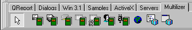

Normally the installation program will completely install MULTILIZER without any further intervention required.

If, however, the MULTILIZER components do not show up in the Multilizer component tab, install the package manually.
In order to make your complex third party component (e.g. TeeChart or 1stClass) multilingual you have to add modules to the MULTILIZER package. Follow the instructions given in the package customizing.
The next step is to open a sample application and compile it.